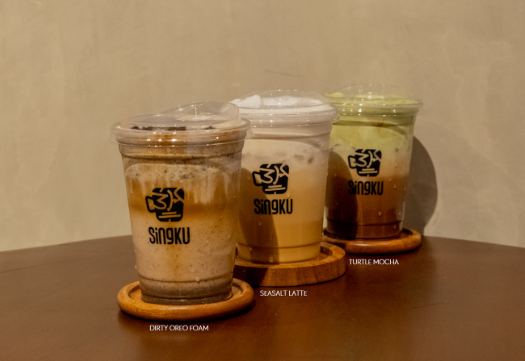
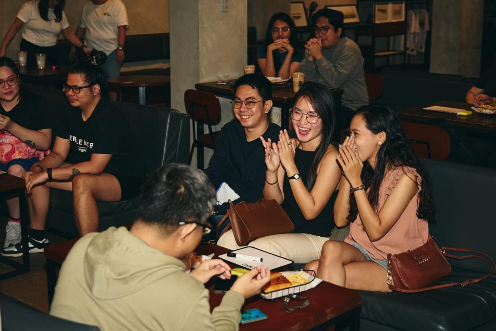

What Awaits You

Signature Drinks
Discover a menu of hand-crafted classics and innovative blends designed to suit every mood — from comforting favorites to bold new flavors, each cup and plate is made to spark connection and elevate your everyday moments.

Inviting Space
Enjoy a relaxing environment perfect for work, study, or meaningful conversations — a warm space where creativity flows, friendships grow, and every visit feels like home.

Exciting Events
At Singku, we host a variety of engaging events where you can connect, have fun, and be part of our vibrant community — from live music and art showcases to workshops and themed gatherings that bring people together.